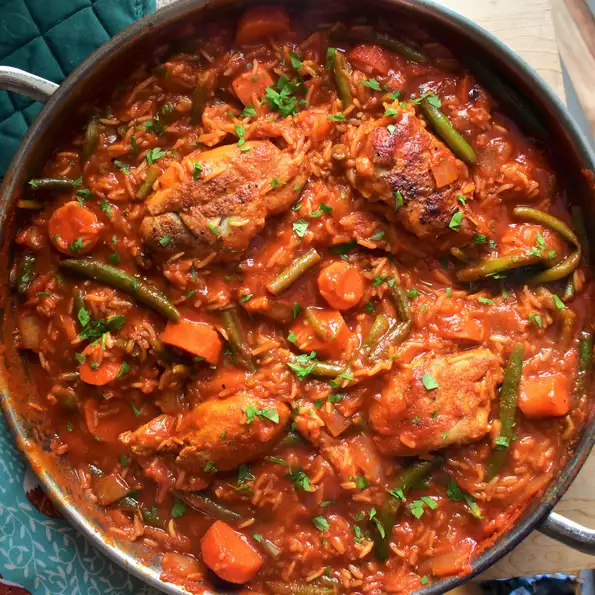

Jollof Rice

Description
Popular and spicy West Africa chicken and rice dish.
Ingredients
- 1 tablespoon olive oil
- 1 large onion, sliced
- 2 (14.5 ounce) cans stewed tomatoes
- 1/2 (6 ounce) can tomato paste
- 1 teaspoon salt
- 1/4 teaspoon black pepper
- 1/4 teaspoon cayenne pepper
- 1/2 teaspoon red pepper flakes
- 1 tablespoon Worcestershire sauce
- 1 tablespoon chopped fresh rosemary
- 2 cups of water
- 1 (3 pound) whole chicken, cut into 8 pieces
- 1 cup uncooked white rice
- 1 cup diced carrots
- 1/2 pound fresh green beans, trimmed and snapped into 1 to 2 inch pieces
- 1/4 teaspoon ground nutmeg
Steps
- Pour oil into large saucepan. Cook onion in oil over medium-low heat until translucent.
- Stir in stewed tomatoes and tomato paste, and season with salt, black pepper, cayenne pepper, red pepper flakes, Worcestershire sauceand rosemary.
- Cover, and bring to a boil. reduce heat, stire in water, and add chicken pieces. Simmer for 30 minutes.
- Stir in rice, carrots, and green beans, and season with nutmeg. Bring to a boil, then reduce heat to low.
- Cover, and simmer until the chicken is fork-tender and the rice is cooked, 25 to 30 minutes.